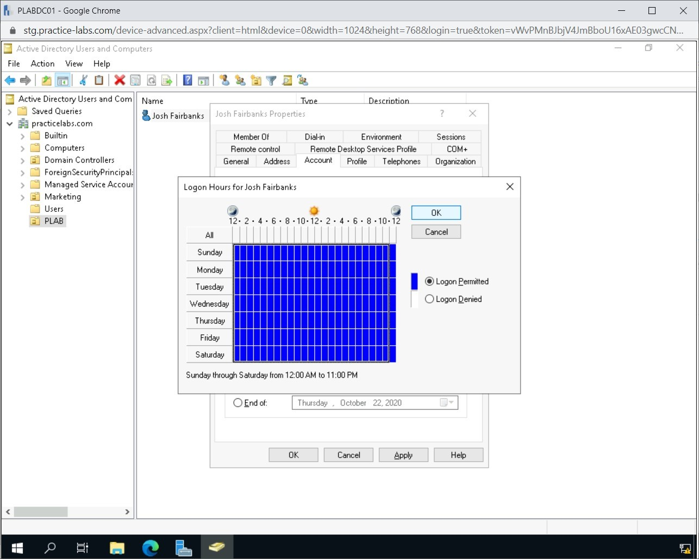
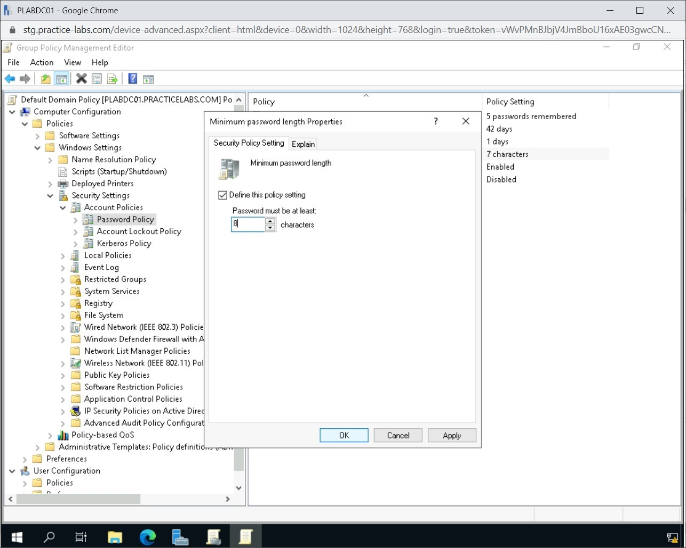

Introduction
bb1840e4-5425-49a3-9d75-477b8f016ff8
Welcome to the Identity and Account Management Mechanisms Practice Lab. In this module, you will be provided with the instructions and devices needed to develop your hands-on skills.
dc640c20-9434-45ea-b7c2-6d4d6a196bfc
Learning Outcomes
In this module, you will complete the following exercises:
- Exercise 1 - Identity
- Exercise 2 - Account Types
- Exercise 3 - Account Policies
After completing this module, you should be able to:
- Create a User Account
- Configure User Account Properties
- Check Account Permissions
- Configure a Password Policy
- Manage Guest and Admin Accounts via Group Policy
- Configure Access Policies
- Perform Account Audit
After completing this module, you should have further knowledge of:
- Identity Providers (IdP)
- Certificates
- Tokens
- SSH Keys
- Network Locations
- Geofencing
- Geotagging
- Geolocation
- Time-based logins
- Impossible Travel Time/Risky Logins
Exam Objectives
The following exam objectives are covered in this lab:
3.7 Given a scenario, implement identity and account management controls.
- Identity
- Account Types
- Account Policies
Note: Our main
focus is to cover the practical, hands-on aspects of the exam
objectives. We recommend referring to course material or a search engine
to research theoretical topics in more detail.
Lab Duration
It will take approximately 1 hour to complete this lab.
c6fa62a3-1a00-4052-8104-258e8cbaa187
Help and Support
For more information on using Practice Labs, please see our Help and Support page. You can also raise a technical support ticket from this page.
Click Next to view the Lab topology used in this module.
d2c53300-f951-45a9-9aa4-3d4ecae69e11
Lab Topology
During your session, you will have access to the following lab configuration.

Depending on the exercises, you may or may not use all
of the devices, but they are shown here in the layout to get an overall
understanding of the topology of the lab.
- PLABDC01 - (Windows Server 2019 - Domain Controller)
- PLABDM01 - (Windows Server 2019 - Domain Member)
- PLABWIN10 - (Windows 10 - Domain Member Workstation)
- PLABKALI - (Kali Linux 2019.4 - Standalone Server)
Click Next to proceed to the first exercise.
<
Home |
README >
CompTIA Security+ Practice Labs
Exercise 1 - Identity
Each user and device on a network need a unique
identity. Without having a way to identify themselves on a system or a
network, the device cannot connect. For example, Josh.Fairbanks would be the user account identity of a user named Josh Fairbanks. In simpler terms, an identity is the username of a user.
Once a user attempts to connect to a network, their
identity needs to be authenticated. This is done with the combination of
either username and password, or it could be done via multi-factor
authentication, which comprises of a username, password, and a
third-factor such as a smart card. Once the user is authenticated based
on the identity, the network will grant the appropriate permissions.
In this exercise, you will learn about various terminologies that are related to identities and their authentication.
Learning Outcomes
After completing this exercise, you should have further knowledge of:
- Attributes
- Certificates
- Tokens
- SSH keys
- Smart cards
Your Device
This exercise contains supporting materials for Security+.

Identity Provider (IdP)
Whenever you connect to an online web application, you
need to have an identity, which must be validated by someone. It can
either be the web application that has an identity provider or a
third-party. For example, you must have come across a web application
that has the following options for login:
- Log in with the user account, which is saved with the web application
- Sign in with Google
- Sign in with Facebook
In the scenario where you have the login account with the web application, an identity provider stores your login. In the Google and Facebook scenario,
they act as the Identity Providers and authenticate you on the
application's behalf. In short, an Identity Provider acts as a
repository of the user identities, which stores and manages them.
Let’s consider the example of www.codechef.com, which uses all three options along with another option, which is signed in with GitHub.
Figure 1.1 Screenshot of CodeChef: Showing various options for login including Google, Facebook, and GitHub.
Note: the image shown may differ from the live website.
Certificates
Digital Certificates are used to establish
identity and encrypt the web, email, and other data in various
scenarios. There are many ways to acquire or issue certificates, and on a
large scale, one option is to use Active Directory Certificate Services.
Active Directory is the directory service for Windows networks that utilize domains and domain controllers. Active Directory Domain Services are used to verify users, groups and computers within a domain.
For a large network, using Certificate Services with Active Directory (AD) is an effective way to provide and manage certificates. When AD certificates are utilized, then Certificate Templates can be used to more easily scale the configuration and management of those certificates.
Issuing and managing Digital Certificates is assigned
to a server dedicated to this role in a larger network. This server
handles certificate issuance and management to requesting users,
computers or network service.
Acquiring the use of a certificate is called
“enrolment.” The act of enrolling a user or a device for a given
certificate may be done one-at-a-time manually for a smaller network.
The user or administrator would simply use the certificates request
wizard in the Microsoft Management Console (MMC).
For larger networks with hundreds or thousands of
users, the certificate enrolment process can be streamlined by creating
and customizing a certificate template. A customized certificate
template allows you to select settings and options such as auto
enrolment. The templates are then used as certificates are deployed to
domain users by using Group Policy Objects (GPO).
Tokens
Tokens are used in multi-factor
authentication, which needs to have two or more authentication methods
implemented. A secure token is a device used to authenticate users to
access applications and data over the network. For example, it would be
the combination of “Something you know” along with “something that you
have.”
There can be hardware tokens and software tokens. A
hardware token is a device that the user needs to carry with him or her.
There is a small LCD panel that displays the numbers, which are
synchronized with a server. On the other hand, software tokens are
applications that a user can put on a mobile device or a laptop.
The following are the advantages of the software tokens:
- You can create many tokens on one device.
- It is free as mobile can be used for it.
- It is always available with you and does not require special hardware.
The following are the disadvantages of a hardware token:
- Can be lost
- Inconvenient to carry
- The battery cannot be changed
- Are with a price tag
SSH Keys
SSH Keys have been used as an alternative to providing a password when remotely connecting to a system using SSH. There are two entities comprising SSH Keys:
public and private keys. Depending on who has the key determines the
types of key being used; if the user has both keys, they are known as
user keys. On the other hand, if the keys are on a remote system, they
are known as host keys.
Finally, another type of key that is frequently used
is session keys. These keys are used to encrypt session information
during a transfer from one host to another host. For example, E-commerce and
banking websites use session keys. The entire session between the
user’s system and the webserver is encrypted. Any communication between
the two can be captured but cannot be deciphered as it is encrypted.
Default SSH keys are vulnerable from the fact
that they are possible to guess. Therefore, changing those keys is an
immediate, secure enhancement to the connection.
7429868b-128c-4069-95a9-7246a6a9e5a3
<
Home |
README >
CompTIA Security+ Practice Labs
Exercise 2 - Account Types
The Windows operating system has a few default
users, which are an administrator and the guest account. When you
create a user on a system, you can either create it as a standard user
with limited permissions or create an administrator account with
complete control over the system.
When you create a user in a domain, the user is by default added to the Domain Users group.
As a domain administrator, you can add the user to different groups
depending upon the privileges you want to grant to the user.
Now, on a local system, some groups exist by default. There is the Users group,
which has limited privileges and permissions. For example, a standard
user cannot install any application on the system. A user, however, can
create files and folders.
Then, you have the Administrator group, which has complete control over the system. Guests group or a guest user has even lesser privileges than a standard user.
In this exercise, you will learn about account types in a Windows domain.
Learning Outcomes
After completing this exercise, you should be able to:
- Create a User Account
- Configure User Account Properties
- Check Account Permissions
Your Devices
You will be using the following devices in this lab. Please power these on now.
- PLABDC01 - Windows Server 2019 (Domain Controller)
- PLABWIN10 - Windows 10 (Domain Member Workstation)

Task 1 - Create a User Account
A domain controller contains users, groups, and computers. It is the main system that runs the Active Directory. To create a domain-based user account, you need to log onto the domain controller and use the Active Directory Users and Computers console.
In this task, you will create a user account.
Step 1
Ensure that all the required devices are powered on.
Connect to PLABDC01.
The Server Manager window is displayed automatically. Click Tools and then select Active Directory Users and Computers.
Figure 2.1 Screenshot of PLABDC01: Selecting Active Directory Users and Computers from the Tools menu.
Step 2
The Active Directory Users and Computers console is displayed. In the left-hand pane, expand practicelabs.com. Notice several nodes appear under the practicelabs.com domain.
 Figure 2.2 Screenshot of PLABDC01: Expanding the domain name in Active Directory Users and Computers.
Figure 2.2 Screenshot of PLABDC01: Expanding the domain name in Active Directory Users and Computers.
Step 3
In the left-hand pane, select Users. Notice
that the right-hand pane displays several users and groups. You can
create users and groups here or can create a separate Organizational Unit (OU).
Figure 2.3 Screenshot of PLABDC01: Selecting Users in the left-hand pane.
Step 4
In the left-hand pane, select practicelabs.com, right-click to select New and then select the Organizational Unit.
Figure 2.4 Screenshot of PLABDC01: Selecting New > Organizational Unit from the context menu.
Step 5
The New Object - Organizational Unit dialog box is displayed.
Notice that the Protect container from accidental deletion check box is automatically selected.
In the Name text box, type the following:
PLAB
Click OK.
Note: The benefit of creating an Organizational Unit (OU) is
that you can segregate the users and groups for a different department.
Then, the different sets of policies can be enforced on different OUs.
For example, you need to encrypt the hard drive only for the Finance
team. A drive encryption policy can be applied only to the Finance OU.
Figure 2.5 Screenshot of PLABDC01: Defining the name as PLAB for the new OU.
Step 6
Back on the Active Directory Users and Computers console, notice that the PLAB OU is now created and selected. At present, there are no users.
Figure 2.6 Screenshot of PLABDC01: Selecting the PLAB OU in the left-hand pane.
Step 7
In the right-hand pane, right-click to select New and then select User.
Figure 2.7 Screenshot of PLABDC01: Selecting New > User from the context menu.
Step 8
The New Object - User wizard is displayed. Enter the following details:
First name:
Josh
Last name:
Fairbanks
The Full name text box is filled automatically.
User logon name:
josh.fairbanks
The User logon name (for Windows 2000) is filled automatically.
Click Next.
Figure 2.8 Screenshot of PLABDC01: Entering the new user details.
Step 9
In the Password and Confirm password text box, type the following:
Passw0rd
De-select User must change password at next logon.
Then, select Password never expires.
Click Next.
Note: You must define a password. Active Directory does not allow you to create a user account with a blank password.
Figure 2.9 Screenshot of PLABDC01: Entering the password for the new user account and setting its options.
Step 10
Click Finish.
Figure 2.10 Screenshot of PLABDC01: Clicking Finish on the New Object - User wizard.
Step 11
Notice that Josh Fairbanks’ account is now created.
Keep the Active Directory User and Computers console open.
Figure 2.11 Screenshot of PLABDC01: Displaying the newly created user account.
Task 2 - Configure User Account Properties
Whether local or domain, you can always configure a
user account by modifying its properties. Even though the local user
account has limited options, the domain user account provides several
configurable options. For example, you can configure the user’s address,
telephone number, and organization name.
Other than these options, you can also configure the remote desktop options, COM+ options, and the user groups.
You can also disable a user account. When the user
account is disabled, you can re-enable the user account. You can also
configure other properties, such as unlocking the user account, setting
an expiration date and so on.
In this task, you will learn to configure user account properties.
Step 1
Ensure that the Active Directory Users and Computers console is open.
Right-click the user account Josh Fairbanks and select Properties.
Figure 2.12 Screenshot of PLABDC01: Selecting Properties from the context menu.
Step 2
The Josh Fairbanks Properties dialog box is displayed. Click the Account tab.
Figure 2.13 Screenshot of PLABDC01: Clicking the Accounts tab on the Josh Fairbanks’s Properties dialog box.
Step 3
The Account tab is displayed.
You will first unlock the user account. Tick the Unlock account box and click Apply.
Figure 2.14 Screenshot of PLABDC01: Selecting the Unlock account option on the Account tab.
Step 4
Click Logon Hours.
Figure 2.15 Screenshot of PLABDC01: Clicking Logon Hours.
Step 5
The Logon Hours for Josh Fairbanks dialog box
is displayed. You can set the duration in which Josh is allowed to use
this account. You are enforcing the time of the day policy on this
account. User, whichever hours are assigned, will not be able to log on
outside these hours.
Click the first top box and select all boxes to the
extreme right-hand for hours 12:00am-10:00pm Ensure the last column is
not selected.
Notice that the time at the bottom changes to Sunday through Saturday from 12:00 AM to 11:00 PM. Click OK.
Figure 2.16 Screenshot of PLABDC01: Setting the date and time in the Logon Hours for Josh Fairbanks.
Step 6
Back on the Josh Fairbanks Properties dialog box, click Log On To.
 Figure 2.17 Screenshot of PLABDC01: Clicking Log On To.
Figure 2.17 Screenshot of PLABDC01: Clicking Log On To.
Step 7
The Logon Workstations dialog box is displayed. Notice that All computers is selected by default.
Change this but selecting The following computers option instead.
In the Computer name text box, type the following:
PLABWIN10
Click Add.
Figure 2.18 Screenshot of PLABDC01: Selecting The following computers and then adding the computer name.
Step 8
Notice that the computer account is now added to the list box below.
Click OK.
Figure 2.19 Screenshot of PLABDC01: Clicking OK on the Logon Workstations dialog box.
Step 9
Back on the Josh Fairbanks Properties dialog box, click Apply and then click OK.
Figure 2.20 Screenshot of PLABDC01: Clicking OK on the user properties dialog box.
Step 10
You are back on the Active Directory Users and Computers console. Right-click Josh Fairbanks and select Reset Password.
Figure 2.21 Screenshot of PLABDC01: Showing Josh Fairbanks right-clicked and Reset Password is selected on the context menu.
Step 11
The Reset Password dialog box is displayed. Type the following in the New password and Confirm password text boxes:
P@ssw0rd
Click OK.
Figure 2.22 Screenshot of PLABDC01: Resetting the password.
Step 12
The Active Directory Domain Services dialog box is displayed. It states that the password for the user is now changed. Click OK.
Figure 2.23 Screenshot of PLABDC01: Clicking OK on the Active Directory Domain Services dialog box.
Step 13
Back on the Active Directory Users and Computers console, right-click Josh Fairbanks and select Disable Account.
Figure 2.24 Screenshot of PLABDC01: Selecting the Disable Account from the context menu.
Step 14
The Active Directory Domain Services dialog box is displayed. It displays a message that the user account is now disabled. Click OK.
Figure 2.25 Screenshot of PLABDC01: Clicking OK on the Active Directory Domain Services dialog box.
Step 15
You can also re-enable the user account. Right-click Josh Fairbanks and select Enable Account.
Figure 2.26 Screenshot of PLABDC01: Selecting Enable Account from the context menu.
Step 16
The Active Directory Domain Services dialog box is displayed. It displays a message that the user account is now enabled.
Click OK.
Figure 2.27 Screenshot of PLABDC01: Clicking OK on the Active Directory Domain Services dialog box.
Step 17
At the end of this task, you will now delete Josh Fairbanks.
Right-click Josh Fairbanks and select Delete.
Figure 2.28 Screenshot of PLABDC01: Showing Josh Fairbanks right-clicked and Delete selected on the context menu.
Step 18
The Active Directory Domain Services dialog box is displayed. It prompts to confirm the deletion of this user account. Click Yes.
 Figure 2.29 Screenshot of PLABDC01: Clicking Yes on the Active Directory Domain Services dialog box.
Figure 2.29 Screenshot of PLABDC01: Clicking Yes on the Active Directory Domain Services dialog box.
Step 19
Back on the Active Directory Users and Computers console, notice that Josh Fairbanks’ account is now deleted.
Keep the Active Directory Users and Computers console open.
Figure 2.30 Screenshot of PLABDC01: The Active Directory Users and Computers console.
Task 3 - Check Account Permissions
Each user in a system has some default permissions,
which can be modified by adding the users to different groups. For
example, when you create a user in a domain, it is part of Domain Users. By default, all the permissions applicable to Domain Users are applied to the user. However, you can always add a user to another group and grant or remove more permissions.
In this task, you will check the account permissions.
Step 1
Connect to PLABDC01.
Ensure that the Active Directory Users and Computers console is open.
Re-create the Josh Fairbanks’ user account in the PLAB OU and set the password to Passw0rd.
Figure 2.31 Screenshot of PLABDC01: Re-creating Josh Fairbanks’ user account in the PLAB OU.
Step 2
After you have created the user account, right-click and select Properties.
Figure 2.32 Screenshot of PLABDC01: Showing Josh Fairbanks right-clicked and Properties selected on the context menu.
Step 3
Click the Member Of tab.
Figure 2.33 Screenshot of PLABDC01: Selecting the Member Of tab in the user properties dialog box.
Step 4
Notice that Josh is part of the Domain Users group. Click the Add button.
Figure 2.34 Screenshot of PLABDC01: Clicking the Add button on the user’s properties dialog box.
Step 5
Let’s assume that you want Josh to manage Group Policies. To do this, in the Enter the object names to select text box, type the following:
Group
Click Check Names.
Figure 2.35 Screenshot of PLABDC01: Entering the name in the Enter the object names to select text box.
Step 6
Notice that after you clicked Check Names, Group is now changed to Group Policy Creator Owners.
Click OK.
Figure 2.36 Screenshot of PLABDC01: Clicking the Check Names button and clicking OK.
c5507563-3e73-4ff7-bcbb-c1e8c80814f3
Step 7
You are back on the Josh Fairbanks Properties dialog box
Besides being part of the Domain Users group, Josh’s account is now granted permission to manage Group Policies within the domain.
Click OK to close this dialog box.
Figure 2.37 Screenshot of PLABDC01: Clicking OK on the user’s properties dialog box.
<
Home |
README >
CompTIA Security+ Practice Labs
Exercise 3 - Account Policies
When users are part of a domain, several account policies can be applied. You can use Group Policies to apply them to users, groups, and systems that are part of the domain. If a user is not part of a domain, you can use the Local Security Policy to apply account policies.
For example, you can apply password policies, which
can enforce complex passwords to users. However, it is important to note
that the policies can be applied at the domain, site, or organizational
unit (OU) level. Policies such as a Password Policy can only be applied at the domain level. Depending on where the policies are applied, the users within that OU, site, or domain are impacted.
In this exercise, you will learn about account policies.
Learning Outcomes
After completing this exercise, you should be able to:
- Configure a Password Policy
- Manage Guest and Admin Accounts via Group Policy
- Configure Access Policies
- Perform Account Audit
After completing this exercise, you should have further knowledge of:
- Network Locations
- Geofencing
- Geotagging
- Geolocation
- Time-based logins
- Impossible Travel Time/Risky Logins
Your Devices
You will be using the following devices in this lab. Please power these on now.
- PLABDC01 - Windows Server 2019 (Domain Controller)
- PLABWIN10 - Windows 10 (Domain Member Workstation)

Network Location
A network location is a profile that contains network and file-sharing related settings. Windows,
by default, provides three different network locations. Depending on
your location, such as home, you can select the appropriate network
location.
- Home: Should be selected when you are connected to a home network.
- Work: Should be selected when connected to the office network and trust other systems on the network.
- Public: Should be selected when you connect
to a public network, such as a public hotspot. You should select this
when you do not recognize or trust other systems on the network.
Geofencing
Geofencing is a location-based service that
can track a mobile device, whether it is moved in or out of a particular
location. There can be various uses of Geofencing. For example, in an organization, Geofencing can
be used by the administrator to define a perimeter and then configure
alerts to be sent if the user moves out of the defined perimeter. On the
other hand, an organization may use Geofencing for its sales
promotion. If a user enters a mall, the organization, which may have a
store in that mall, can send promotional alerts to the user.
Geotagging
Geotagging allows you to add geographical information to media, such as photographs and videos. Geotagging can either be automatically added to media that you are shooting or manually added later. With automatic Geotagging, you need to have a camera that has an integrated GPS receiver. When you enable the receiver, any photograph that you take will have Geotagging information.
Geolocation
Geolocation tracks the location of the user. Geolocation can
either use an IP address of the user or use a GPS device to track their
location. Several web browsers use the IP address to track the user
location. However, since it is mostly the IP address of the Internet Service Provider (ISP)
that can be discovered, the user's exact location may not be possible
to determine, only the general location. On the other hand, GPS devices
can determine the precise and exact location of a user. As you would
expect, Geolocation is used by police and government bodies all around
the world. However, an example of how this could be used in a
professional environment is if a user is authorized to only work from
home, then if the user chooses to work from somewhere else, an alarm is
raised.
Time-based logins
John has access to the Sales folder on a file
server. John usually connects to this folder while in office. After
reaching home, John had to download a critical file and update it before
sharing it with the manager. However, John cannot connect to the file
server even though other servers through VPN are accessible. The next
morning, John works from home and can connect to the folder after 9 AM.
In this scenario, the Sales folder has
time-based restrictions applied as the scenario indicates that the user
could connect the next morning, which means that there are time-based
restrictions.
Impossible Travel Time/Risky Login
During your audit of a system, you may come across a
user account logging into the system from a remote location. If the same
user has then logged in from a different location, far away from the
first location, you can very well suspect that someone with malicious
intentions is using the user’s account. The logins from different
locations should be considered indicators of compromise. However, you
have to be careful as the user may be using a VPN, which provides
different locations.
Task 1 - Configure a Password Policy
In the Windows environment, you can define the
type of password a user can create. For example, you can enforce the
complex password policy, which does not allow the users to create simple
passwords. Users must create a complex password, which contains
letters, numbers, and special characters. You can also define the
password length.
This Local Policy impacts only a single system. However, a password policy can be enforced through Group Policy, which will impact all users in a domain.
In the Active Directory environment, a password policy can only be defined at the domain level.
In this task, you will configure a password policy.
Step 1
Ensure you are connected to PLABDC01.
Close the Active Directory Users and Computers window. and ensure that the Server Manager window is open.
Click Tools and then select Group Policy Management.
Figure 3.1 Screenshot of PLABDC01: Selecting Group Policy Management from the Tools menu.
Step 2
The Group Policy Management console is displayed.
In the left-hand pane, expand Forest: practicelabs.com, expand Domains, and then expand practicelabs.com.
Select and right-click Default Domain Policy and select Edit.
Figure 3.2 Screenshot of PLABDC01: Right-hand-clicking Default Domain Policy and select Edit from the context menu.
Step 3
The Group Policy Management Editor is displayed.
In the left-hand pane, under Computer Configuration, expand Policies and then expand Windows Settings.
Now expand Security Settings and then expand Account Policies. Then, select Password Policy.
Notice that the right-hand pane displays a set of password policies.
Note: To configure password policy on a local system, open the Local Security Policy console and navigate to the Password Policy node following the same steps.
Figure 3.3 Screenshot of PLABDC01: Selecting the Password Policy node.
Step 4
Notice that the password related policies are enabled by default. Double-click Enforce password history. When this policy is enabled, you will not use the last 24 passwords you had earlier used with a specific user account.
Figure 3.4 Screenshot of PLABDC01: Showing the policies for the Password Policy node.
Step 5
The Enforce password history Properties dialog box is displayed. The default value in Keep password history for the text box is 24. Change this value to:
5
Click OK.
The domain users will not be able to use the last
five passwords. When the user changes the password for the sixth time,
the first of the five passwords can be re-used.
Figure 3.5 Screenshot of PLABDC01: Changing the default value from 24 to 5 in the Keep password history for the text box.
Step 6
Double-click the Minimum password length policy.
Figure 3.6 Screenshot of PLABDC01: Double-clicking the Minimum password length policy.
Step 7
To increase the password's length, change the value in Password must be at least text box to:
8
The default value is 7.
Click OK.
Figure 3.7 Screenshot of PLABDC01: Setting the value of 7 in the Password must be at least text box.
Step 8
Back on the Group Policy Management Editor window, note that the Minimum password length is now changed to 8.
Keep the default values in the remaining policies.
Figure 3.8 Screenshot of PLABDC01: Displaying the configured policies.
Step 9
Click the Account Lockout Policy node in the left-hand pane. Notice that the right-hand pane displays a set of policies.
Double-click the Account lockout duration policy.
Figure 3.9 Screenshot of PLABDC01: Double-clicking the Account lockout duration policy.
Step 10
The Account lockout duration Properties dialog box is displayed.
Tick the Define this policy setting box. Notice that Account is locked out for text box uses a default value of 30 minutes.
Click OK.
Figure 3.10 Screenshot of PLABDC01: Selecting Define this policy setting and then accepting the default value.
Step 11
The Suggested Value Changes dialog box is displayed. It will now reset the values for the following policies:
- Account lockout threshold
- Reset account lockout counter after
Click OK.
The Account lockout duration Properties dialog box will close automatically.
Figure 3.11 Screenshot of PLABDC01: Clicking OK on the Suggested Value Changes dialog box.
Step 12
You should now be on the Group Policy Management Editor. Keep this window open.
Figure 3.12 Screenshot of PLABDC01: Displaying the configured policies.
Task 2 - Manage Guest and Admin Accounts via Group Policy
At the domain level, you can manage Guest and Admin
accounts via Group Policy. If you need to perform the same task at a
system level, you can open the Local Security Policy console and
navigate to the following node: Local Computer Policy > Computer Configuration > Policies >Windows Settings >Security Settings >Local Policies > Security Options
To manage Guest and Admin accounts via Group Policy, perform the following steps:
Step 1
Ensure that the Group Policy Management Editor window is open.
Navigate to the following path in the left-hand pane: Computer Configuration > Policies >Windows Settings >Security Settings >Local Policies > Security Options.
A set of policies are displayed in the right-hand pane.
Note: In this task, you are going to disable the Guest account on all domain systems. You will also rename the Admin account.
 Figure 3.13 Screenshot of PLABDC01: Displaying the Security Options policies in the right-hand pane.
Figure 3.13 Screenshot of PLABDC01: Displaying the Security Options policies in the right-hand pane.
Step 2
Double-click the Accounts: Guest account status policy.
Figure 3.14 Screenshot of PLABDC01: Double-clicking the Accounts: Guest account status policy
Step 3
The Accounts: Guest account status dialog box is displayed. Tick the Define this policy setting box, select Disabled if not selected by default.
Click OK.
Figure 3.15 Screenshot of PLABDC01: Selecting Define this policy setting, clicking Enabled and then clicking OK.
Step 4
Double-click the Accounts: Rename administrator account policy.
Figure 3.16 Screenshot of PLABDC01: Double-clicking the Accounts: Rename administrator account policy.
Step 5
The Accounts: Rename administrator account dialog box is displayed. Tick the Define this policy setting box and in the text box, type the following:
PLABAdmin
Click OK.
 Figure 3.17 Screenshot of PLABDC01: Selecting Define this policy setting, adding a new name, and then clicking OK.
Figure 3.17 Screenshot of PLABDC01: Selecting Define this policy setting, adding a new name, and then clicking OK.
Step 6
Back on the Group Policy Management Editor window, notice that both the policies are now configured.
Keep the Group Policy Management Editor window open.
Figure 3.18 Screenshot of PLABDC01: Displaying the configured policies.
Task 3 - Configure Access Policies
Other than the administrative tasks, a normal user
has access to several tools and utilities in Windows. You can restrict
access to several tools and utilities. For example, you can restrict
access to a command prompt.
In this task, you will learn to configure access policies.
Step 1
Continue to connect to PLABDC01.
Ensure that the Group Policy Management Editor window is open.
In the previous task, you were in the Computer Configuration node.
In this task, expand User Configuration > Policies> Administrative Templates, and then select Control Panel.
Figure 3.19 Screenshot of PLABDC01: Selecting the Control Panel node in Computer Configuration.
Step 2
Let’s prohibit access to Control Panel.
To do this, double-click Prohibit access to Control Panel and PC Settings.
 Figure 3.20 Screenshot of PLABDC01: Double-clicking Prohibit access to Control Panel and PC Settings.
Figure 3.20 Screenshot of PLABDC01: Double-clicking Prohibit access to Control Panel and PC Settings.
Step 3
Select the Enabled option and click OK.
Figure
3.21 Screenshot of PLABDC01: Selecting Enabled and then clicking OK on
the Prohibit access to Control Panel and PC settings window.
Step 4
Notice that the policy is now enabled.
 Figure 3.22 Screenshot of PLABDC01: Showing the enabled policy.
Figure 3.22 Screenshot of PLABDC01: Showing the enabled policy.
Step 5
Under the Administrative Templates: node, click System.
Then, in the right-hand pane, double-click Prevent access to the command prompt.
Figure 3.23 Screenshot of PLABDC01: Double-clicking Prevent access to the command prompt.
Step 6
In the Prevent access to the command prompt dialog box, select the Enabled option here too.
From the Disable the command prompt script processing also? drop-down, select Yes. Click OK.
Figure 3.24 Screenshot of PLABDC01: Enabling the policy with specific configuration and clicking OK.
Step 7
Notice that the policy is now enabled. Double-click Prevent access to registry editing tools.
Figure 3.25 Screenshot of PLABDC01: Double-clicking Prevent access to registry editing tools.
Step 8
In the Prevent access to registry editing tools dialog box, click the Enabled option and then click OK.
Figure 3.26 Screenshot of PLABDC01: Clicking Enabled and then clicking OK.
Step 9
Expand the System node, double-click the Removable Storage Access folder in the right-hand pane.
Figure 3.27 Screenshot of PLABDC01: Double-clicking Removable Storage Access.
Step 10
In the right-hand pane, double-click Removable Disks: Deny write access.
 Figure 3.28 Screenshot of PLABDC01: Double-clicking Removable Disks: Deny write access.
Figure 3.28 Screenshot of PLABDC01: Double-clicking Removable Disks: Deny write access.
Step 11
In the Removable Disks: Deny write access dialog box, select the Enabled option and click OK.
When this policy is enabled and comes to effect, it will prevent write access to the USB drives or any kind of removable media.
Figure 3.29 Screenshot of PLABDC01: Clicking Enabled and then clicking OK.
Step 12
The policy is now enabled. Keep the Group Policy Management Editor window open.
Figure 3.30 Screenshot of PLABDC01: Showing the enabled policies.
Task 4 - Perform Account Audit
A user account can either be audited locally on a system or audited using Group Policy. When you configure a Group Policy, you can audit users in a specific OU or
even in the entire domain. In this task, you will learn to configure
account auditing at the domain level. To do this, perform the following
steps:
Step 1
Connect to PLABDC01.
Ensure that the Group Policy Management Editor window is open.
Minimize the User Configuration node, which was being accessed in the previous task as well as any other windows.
Navigate to Computer Configuration > Policies > Windows Settings > Security Settings > Local Policies.
Figure 3.31 Screenshot of PLABDC01: Showing the policies under the Local Policies node.
Step 2
Select Audit Policy in the left-hand pane. Notice that the right-hand pane displays several policies.
Figure 3.32 Screenshot of PLABDC01: Selecting the Audit Policy node under the Local Policies node.
Step 3
Double-click Audit account logon events.
Figure 3.33 Screenshot of PLABDC01: Double-clicking Audit account logon events.
Step 4
In the Audit account logon events Properties dialog box, tick Define these policy settings.
Then, untick the Success box and tick the Failure box.
Note: It is
critical to audit the failed logon events. If one account has
continuously failed log on events, then it could be that someone is
trying to guess passwords for a user account.
Click OK.
Figure 3.34 Screenshot of PLABDC01: Enabling the policy, selecting Failure and then clicking OK.
Step 5
The policy is now configured. Let’s also configure the Audit logon events policy. To do this, double-click on this policy.
Figure 3.35 Screenshot of PLABDC01: Double-clicking Audit logon events.
Step 6
In the Audit logon events Properties dialog box, tick the Define these policy settings. Then, untick the Success box and tick the Failure box.
Click OK.
Figure 3.36 Screenshot of PLABDC01: Enabling the policy, selecting Failure and then clicking OK.
Step 7
The policy is now configured.
It is always good to enable auditing on the objects that a user is accessing in the domain.
To enable the Audit privilege use policy, double-click to open it first.
Figure 3.37 Screenshot of PLABDC01: Double-clicking Audit privilege use.
Step 8
In the Audit privilege use Properties dialog box, tick Define these policy settings. Then, tick the Success and Failure boxes.
Click OK.
Figure 3.38 Screenshot of PLABDC01: Enabling the policy, selecting Success and Failure, and clicking OK.
c5507563-3e73-4ff7-bcbb-c1e8c80814f3
Close all open windows.
d31298f5-3011-4089-bf06-fbf08c44a7f9
Keep all devices that you have powered on in their current state and proceed to the review section.
Review
Well done, you have completed the Identity and Account Management Mechanisms Practice Lab.
c6e74811-6d1f-4779-94c2-34fcca239022
6873d348-8bfd-4348-977a-bc6ca8d49a36
a2efc642-1c83-4b82-af47-db5814a0e8e2
6a212233-698d-4be3-98e5-7d5761e452e5
ac37486f-436b-4d45-a7bc-7283a0ccbf6e
e1620882-1623-4c26-a2aa-23b9165c7fd4
aaaaaaaa-1111-1111-1111-193f35a24fe3
Summary
You completed the following exercises:
- Exercise 1 - Identity
- Exercise 2 - Account Types
- Exercise 3 - Account Policies
You should now be able to:
- Create a User Account
- Configure User Account Properties
- Check Account Permissions
- Configure a Password Policy
- Manage Guest and Admin Accounts via Group Policy
- Configure Access Policies
- Perform Account Audit
You should now have further knowledge of:
- Identity Providers (IdP)
- Certificates
- Tokens
- SSH Keys
- Network Locations
- Geofencing
- Geotagging
- Geolocation
- Time-based logins
- Impossible Travel Time/Risky Logins
Feedback
067744a4-4299-4662-b5be-04dbb636a007
Shutdown all virtual machines used in this lab. Alternatively, you can log out of the lab platform.